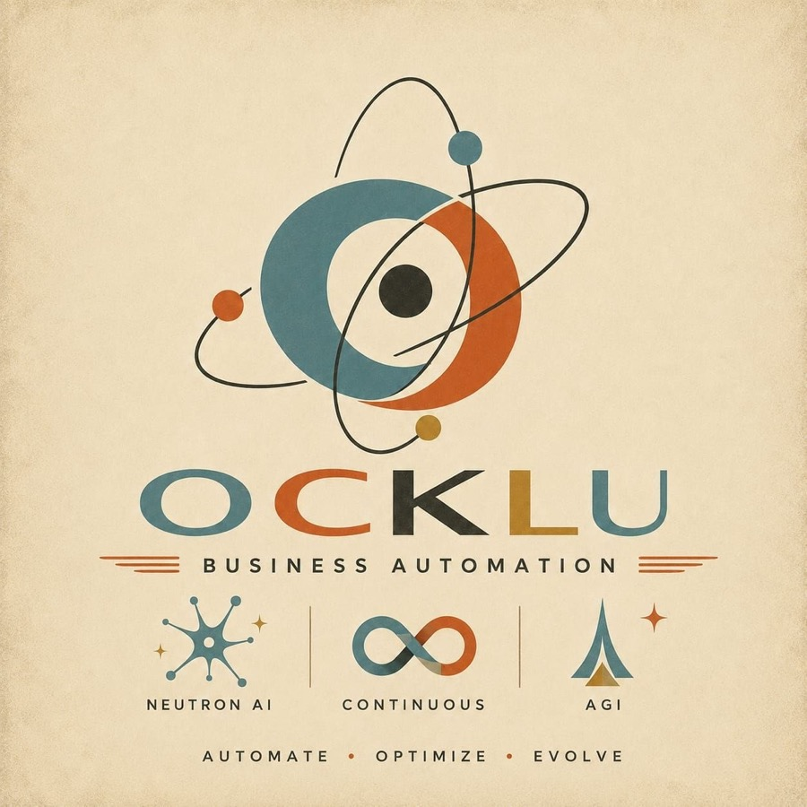
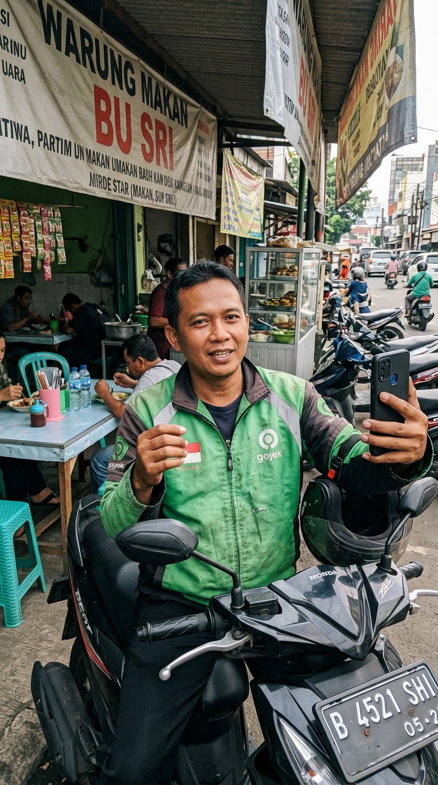
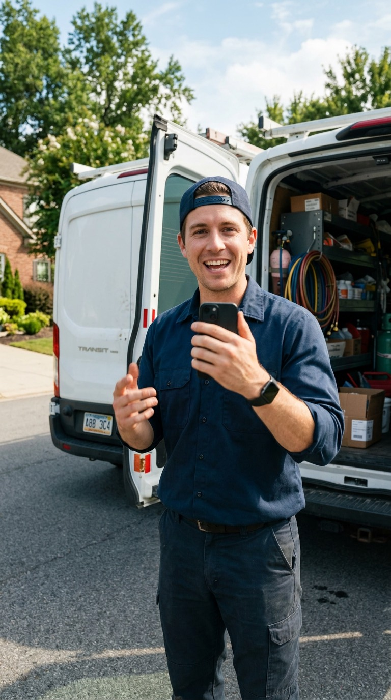
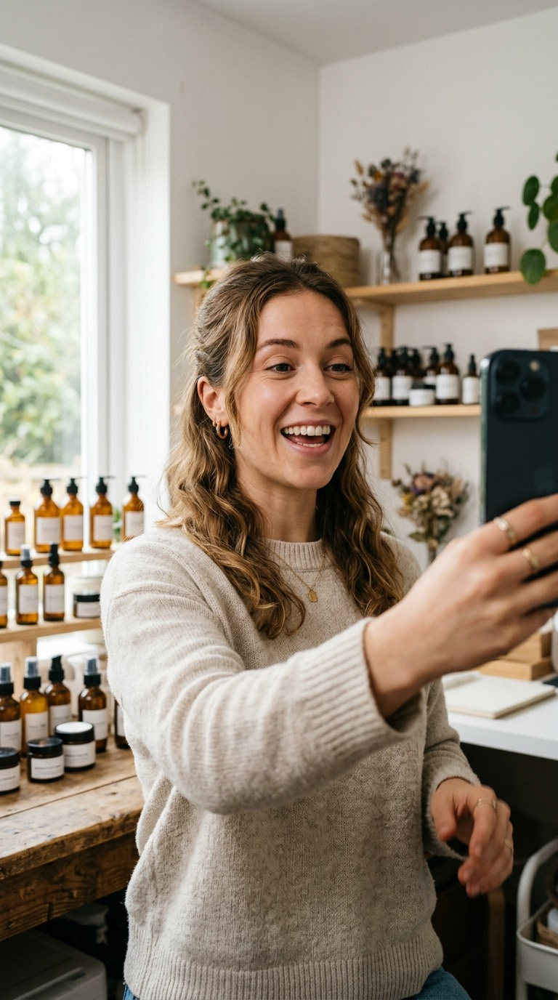
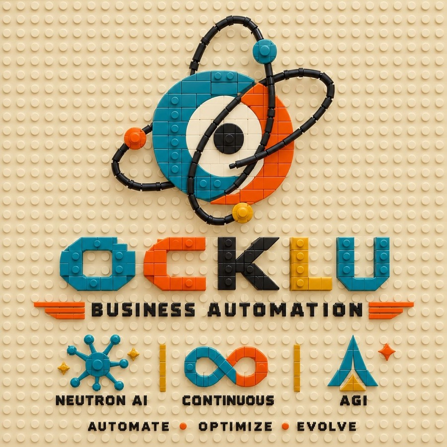

OCKLUTiga mesin kecil.
Bekerja saat Anda tidur.

Driver ketik tiga angka: tarif, jarak jemput, jarak antar. Aplikasi menjawab AMBIL atau LEWATI, dengan alasan dalam rupiah.
Tidak menyentuh aplikasi Gojek, Grab, atau Maxim. Akun Anda aman.

Untuk usaha jasa: tukang ledeng, AC, bengkel, salon. Tiap pekerjaan selesai, pelanggan otomatis diminta ulasan, lalu diingatkan sampai tiga kali.
Mulai dengan audit gratis: kami tunjukkan posisi bintang Anda dibanding pesaing terdekat, dari data Google Maps yang asli.

AIRANK menanyakan pertanyaan pelanggan Anda ke mesin AI setiap hari, lalu mencatat siapa yang disebut dan di urutan berapa.
Bedanya dengan yang lain: jawaban mentah AI ditempel di setiap angka. Anda bisa cek sendiri, bukan cuma percaya skor.

Semua dibangun dan dijalankan oleh OCKLU. Angka di halaman ini berasal dari mesin kami sendiri, bukan karangan.
Orang di video ilustrasi adalah gambar AI, bukan pelanggan. Kalimatnya adalah contoh pemakaian.